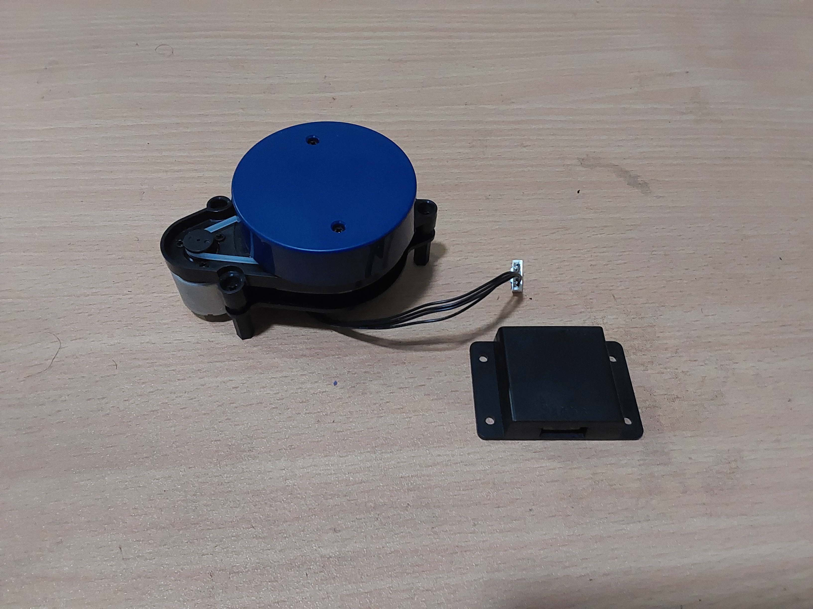
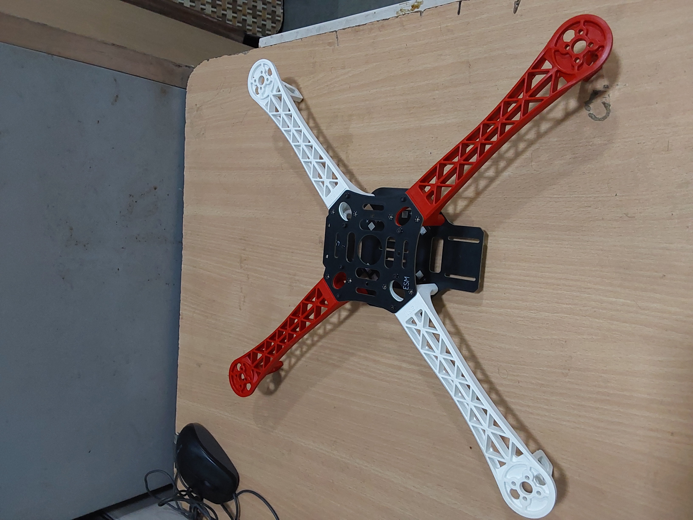
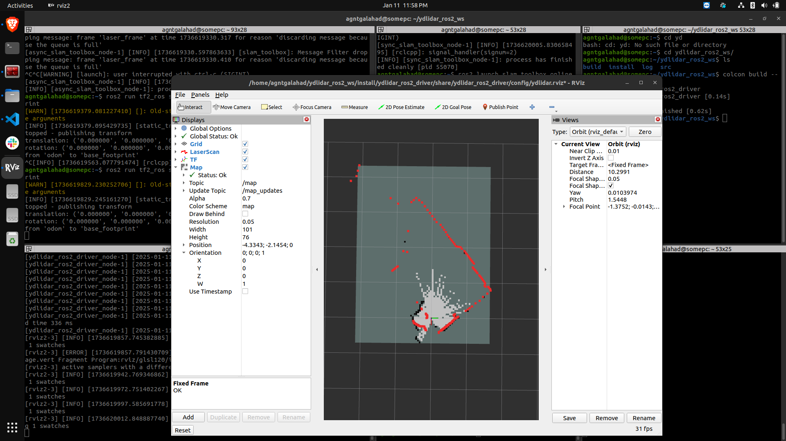

The LiDAR Drone Idea
IDEA:
To mount a LiDAR sensor on top of a drone to allow for real time obstacle avoidance. This should allow to fly the drone in an indoor environment autonomously. The drone will also have a camera mounted on it for active person tracking and following while maintaining a safe distance.
So in order to begin with the development we started with a drone frame and a LiDAR sensor. The LiDAR sensor used is a 2 dimensional LiDAR sensor which is capable of providing 360 degree scan of the environment.
The model in use is a YDLidar X2 with a range of 8m.

As for the frame we decided to go with the F450 drone chassis. Since its one of the most common and cheap options for building a drone

So far we have been able to read the stream from the YDLiDAR and generate a map using SLAM Toolbox. But since performing SLAM requires odometry data we are able to visualize the data stream at one position.

I will post the steps for setting up the YDLiDAR X2 using SLAM Toolbox in a later blog. So stay tuned for that.
We are also working on creating the simulations for the drone with the help of ROS2 Gazebo to test out the working of the drone.